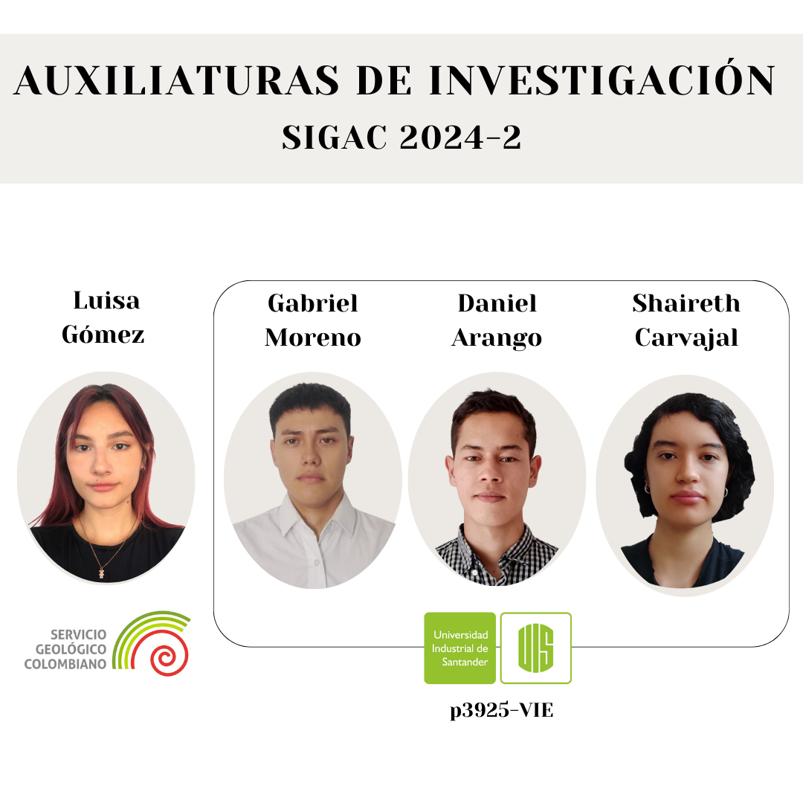
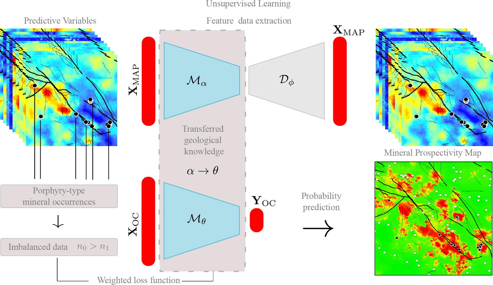
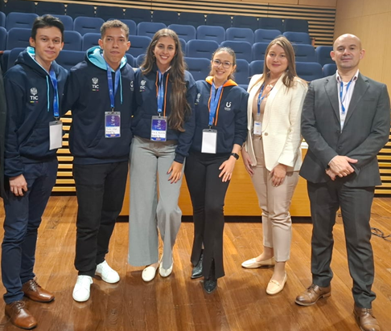

SIGAC
Semillero de Investigación en Geofísica Aplicada y Computacional
Semillero de Investigación en Geofísica Aplicada y Computacional
Datos abiertos de proyectos geofísicos: sísmica, gravimetría, magnetometría y más.
Ir al repositorioSomos el Semillero de Investigación en Geofísica Aplicada y Computacional (SIGAC), conformado por estudiantes de Geología de la Universidad Industrial de Santander (UIS). Nuestro enfoque actual se centra en cuatro líneas de investigación: Aprendizaje automático y minería de datos geocientíficos, geofísica somera aplicada a estudios del subsuelo, procesamiento y modelamiento sísmico 2D y 3D, geociencias computacionales y simulación numérica. Buscamos fortalecer las competencias en geología y geofísica aplicada, difundiendo el conocimiento mediante cursos, talleres, videotutoriales, exposición de pósters y salidas de campo con énfasis en la geofísica computacional.
2024-2
Cuatro estudiantes de pregrado desarrollan auxiliaturas de investigación: tres en el proyecto 3925 junto al Grupo HDSP y uno con el Servicio Geológico Colombiano (SGC). Ver más.
Octubre, 2024
Artículo titulado “Porphyry-type mineral prospectivity mapping with imbalanced data via prior geological transfer learning”, con autoría de miembros del semillero. Leer artículo.
Noviembre, 2024
Estudiantes UIS, entre ellos un miembro del SIGAC, obtuvieron el segundo lugar con el proyecto FIRENET en la competencia nacional “Datos a la U” del MinTIC. Más detalles.
Correo: sigac@uis.edu.co
Instagram: @sigacuis
LinkedIn: Semillero de Investigación en Geofísica Aplicada - SIGAC
Dirección: Universidad Industrial de Santander
Carrera 27 Calle 9, Bucaramanga, Santander
Teléfono: +57 (607) 634 4000
Ver mapa: